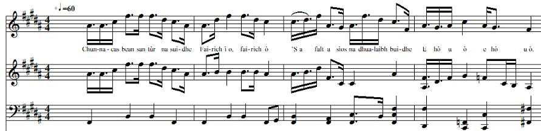
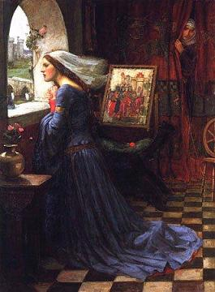

Chunnacas Bean san Tùr na Suidhe
The Lass sitting in a Tower - La Fille de la Tour
Possibly a song on the Old Pretender
Tune - Mélodie"Chunnacas Bean san Tùr"
a pentatonic tune, as sung by Mrs Bella Cameron and recorded by Calum Iain Maclean
Sequenced by Christian Souchon

|
This song tells of a woman sitting at a window in a tower combing her long, fair hair.
8 lines sung. The contributor heard the song from Teeny Margaret MacLellan, Ballygrant, Islay . The final lines suggest that the song may have a Jacobite connection [allegory for Scotland]. They say "The son of King James is bringing me food and the young noblewoman is bringing me drink." (Item Notes to record 1953.130.4 kept by the "School of Scottish Studies" - Permanent Link: www.tobarandualchais.co.uk/fullrecord/6774/1 ) |
 "Rosamund" by J. W. Waterhouse |
Ce chant parle d'une femme qui peigne ses longs cheveux blonds, assise à la fenêtre d'une tour .
8 vers du poème sont chantés. La contributrice tient ce chant de Teeny Margaret MacLellan, Ballygrant, Islay . La strophe finale permet de supposer que ce chant a un contenu Jacobite [allégorie de l'Ecosse]. Elle dit "Le fils du Roi Jacques m'apporte de la nourriture et la jeune noble m'apporte à boire." (Notes accompagnant l'enregistrement 1953.130.4 conservé par la "School of Scottish Studies" - Lien permanent: www.tobarandualchais.co.uk/fullrecord/6774/1 ) |

|
THE LASS IN THE TOWER
1. There sits a lass in the tower Behold, i ò, behold ò! Long fair hair falls on her shoulder E hò u ò e hò u ò. 2. Long fair hair falls on her shoulder Behold, i ò, behold ò! Her wood comb smoothes it all over E hò u ò e hò u ò. 3. - Tell me, who are you, fair lassie? Behold, i ò, behold ò! - The High King, he is my own daddy E hò u ò e hò u ò. 4. The son of King James food is bringing Behold, i ò, behold ò! And the young noblewoman brings me drink. - E hò u ò e hò u ò. Translation Christian Souchon (c) 2015 |
CHUNNACAS BEAN SAN TUR NA SUIDHE
1. Chunnacas bean san tùr na suidhe Fairich ì o, fairich ò ’S a falt a sìos na dhualaibh buidhe E hò u ò e hò u ò. 2. ’S falt a sìos na dhualaibh bhuidhe Fairich ì ò, fairich ò ’S i ga chìreadh le cìr fhiodha E hò u ò e hò u ò. 3. Dh’fheòraich mi dhi cò dheth ’m bitheadh Fairich ì o, fairich ò - Gur e ’n t-àrd-rìgh m’athair dligheach E hò u ò e hò u ò. 4. Mac righ Seumas a’ toirt dhomh bidh Fairich ì o, fairich ò ’S a bhaintighearn’ òg a toirt dhomh dibhe. - E hò u ò e hò u ò. Source: www.glasgowgaelic.glasgow.sch.uk/Websites/SchMixedGlasgowGaelic/UserFiles/file/Mod%202010%20-%20Faclan.doc (Contest C44: Sung by the "Melodious Daughters - Nigheanan Fileanta", aged 9 and 10). |
LA FILLE DE LA TOUR
1. Je vois dans la tour une fille, Regarde bien, tu la vois? Dont les longs cheveux blonds ondulent. Tra la lère et tra la la. 2. Ses longs cheveux blonds ondulent, Regarde bien, tu la vois? D'un peigne en bois elle les lisse. Tra la lère et tra la la. 3. - Qui donc es-tu, dis-moi, la belle, Regarde bien, tu la vois? - Du roi je suis la propre fille, Tra la lère et tra la la. 4. Nourrie par le fils du roi Jacques, Regarde bien, tu la vois? La jeune dame m'apporte à boire. - Tra la lère et tra la la. Traduction Christian Souchon (c) 2015 |